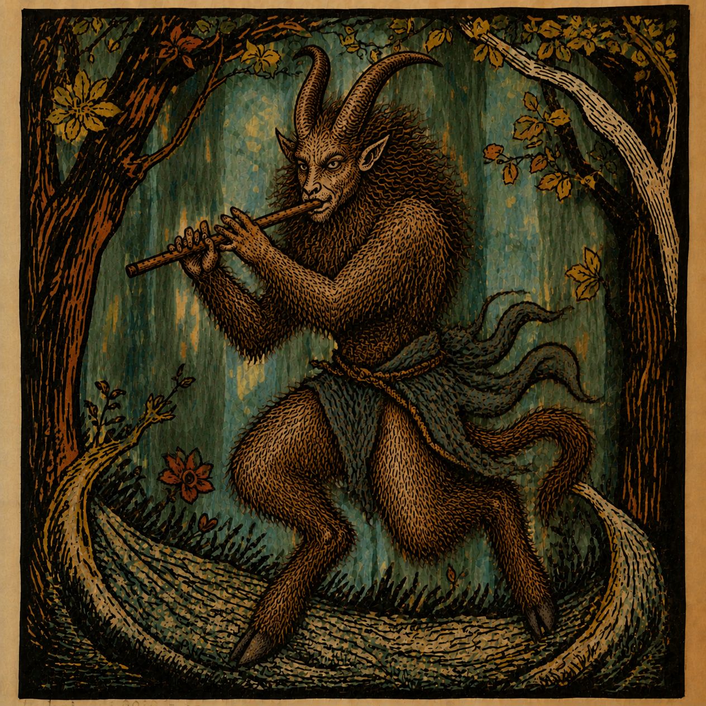

Find · Acquire · Unify · Normalize
A simple, free desktop app for ffmpeg, yt-dlp and mpv. Trim, convert, compress and tidy audio and video, download from many sites, and play your files with a live VU meter, without typing a single command.
Version 1.0 · Free and open source (GPL-3.0) · English and Czech

The name says it: four jobs, one window.
Search and browse sites, channels and playlists, and play what you find.
Download videos and music, one link or a whole list, in the quality you want.
Clean file names, number files, and write tags and cover art so a folder looks consistent.
Even out loudness so every track plays at a similar volume.
Everything you need to look after a media library.
Download, unzip, open. Install the helper tools from the Setup tab.
Windows: if SmartScreen appears, click “More info”, then “Run anyway”.
macOS: right-click the app, choose “Open”, then “Open” again.
FAUN is not signed with a paid certificate yet, so this is expected. The source code is public if you prefer to check it or run it yourself with Python.
FAUN needs ffmpeg, yt-dlp and mpv. Open the Setup tab and it installs or updates them for you.
It is free and made by one person. If it saves you time, you can support it.
Support FAUN on Ko-fi